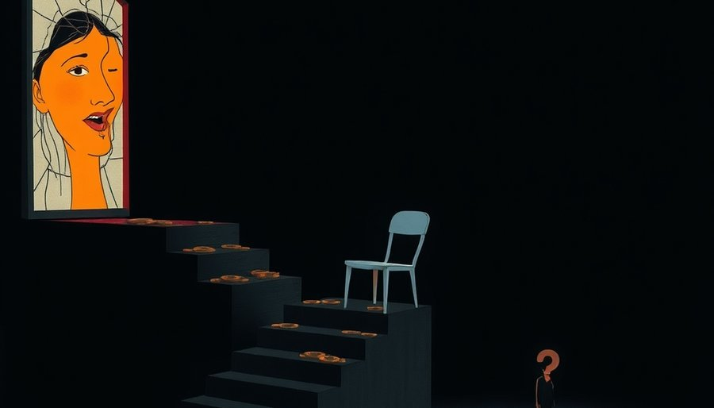

同一年退休的两个人：一个在职工养老保险里滚了三十年，月底几千；一个在城乡居民养老里缴了十五年，月底一百多。两边都按制度交了该交的钱，等着同一个晚年，拿到差距悬殊的结果。
有人会说，农民交得少，自然拿得少。职工养老金的个人缴费也是从工资里扣的，比例固定，并非自愿多交。个人缴费的差异并不足以解释几十倍的待遇落差。差异的根源不在个人，在两套制度的起点。
职工养老保险建账早，1990年代初起步，单位缴费为主，个人账户加统筹积累，滚了三四十年，资金池厚。城乡居民养老保险由新农保、城居保整合而来，2009年才在全国铺开，个人自愿小额定缴，政府给予补贴，积累才十几年，池子薄。一个靠制度性缴费滚了几十年，一个靠自愿小额定缴刚起步。建制时间差和资金积累机制的不同，直接写在了每个人月底的账上。
143元怎么定出来的？中央财政确定全国最低标准，地方财政在此基础上上浮。但最低线的抬升受制于一道算术题：覆盖人数。上亿人每人每月多10元，每年就是上百亿的财政支出。基数越大，抬得越慢。
这次从123元涨到143元，是第七次上调，涨了20元。涨幅追不上物价，更追不上职工养老金的涨幅。职工养老金调整机制与工资增长挂钩，而居民基础养老金的调整依赖财政决策。两头的差距逐年拉大。
欠发达地区只能贴住中央线。中西部不少省份的基础养老金，就是143元这个数。上海、北京等地远超这个标准，那是地方财力上浮的结果。同一套制度框架内，地区间的落差同样悬殊。
143元够做什么？几斤米，几度电，几次挂号。一次感冒发热的门诊，就能花掉大半。它保证饿不死，不保证活得下去。
最低标准的意义是兜底。这个词写在政策文件里，定义的是生存底线，不是生活底线。制度设计之初，保基本意味着覆盖口粮。二十年后，基本生活的定义已经变了。看病、取暖、交通，这些早已不是额外开销。
同样是交了钱的人，同为国家养老制度，两本账。制度碎片化的代价，由建制晚的那套制度承担。城乡居民养老保险覆盖了最多人口，拿到的是最低的待遇位。143元是一面镜子，照出的不是哪个地方穷，是一整套制度的起点差距。

制度弹性在增加。中央标准逐年上调，地方财政上浮已在进行。上海等地的基础养老金可以超过中央标准数倍，说明上浮空间存在。但欠发达地区受限于财力，上浮不是普遍可能。
可辩论的问题留在这里：最低标准的最低，该按什么水平定义？饿不死，还是活得下去？143元回答的是前一个问题。后一个问题，需要更快的上调速度，或者更大力度的财政转移。
下一次上调会在什么时候？涨多少？这些问题没有写在任何文件里，但它们决定了上亿人晚年最底层的安全感。
尾声
制度设计之初，保基本意味着覆盖口粮。二十年后，基本生活的定义已经变了。最低标准的上调速度，决定了它是追近这个定义，还是离它越来越远。
小汪老师的成长观察笔记